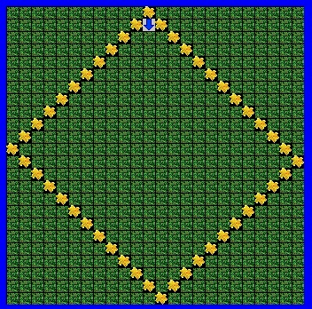
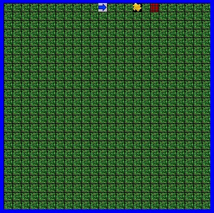
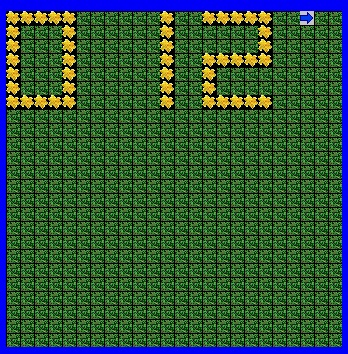
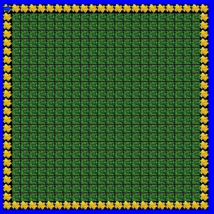
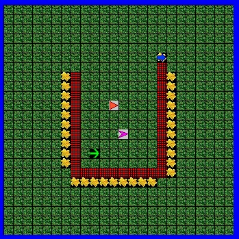
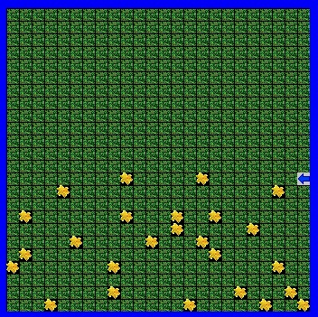
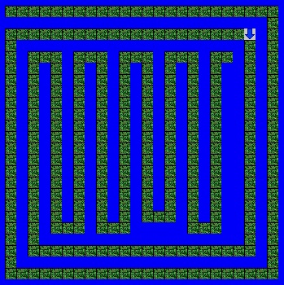
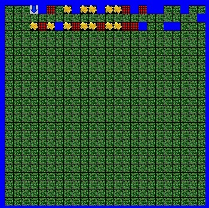

Jeroo Content
Diamond (Unit 1)
Description
We used the Jeroo programm that runs on a java-based language to make a "Jeroo" to create a diamond on the island out of flowers. This activity required that the Jeroo plants all the flowers, the Jeroo is not in the water and they are facing south after the flowers have been planted. The map is not a perfect even number so the diamond will be slightly mis-shapen.
Concepts Learned
- Basic Jeroo commands such as "hop();" in order to move.
- The "plant();" command to plant a flower.
- The "turn();" command that, when a direction is inputed into the parenthesis, turn in the given direction.
Nets (Unit 1)
Description
The purpose of this lab was to used some new commands and be careful on timing in order to pickup flowers, hop and then toss them into the net in order to get rid of the net. The requirements included all nets and flowers gone and the Jeroo not hopping into any of the nets. The number of hops the Jeroo takes must be tought out to make sure that the nets will be taken out.
Concepts Learned
- The "toss();" command. Used when a net is in front of the Jeroo and the Jeroo gets rid of the net by tossing a flower into it.
- The "pick();" command was used to pick up a flower from where the Jeroo is standing.
LED (Unit 2)
Description
The purpose of this lab was to use different methods in order to write 3 select numbers out of all digits (0-9). In order to accomplish this with effecience we can use already existing digits to complete the other digits. For example, the digit "5" can be used to build the digit "0". These digits were required to be in a 5 column and 7 row format, any digit can be called (max. of 3), and each number must be 2 column spacing.
Concepts Learned
- Using different methods were introduced. Methods organize the code and also make it more effecient in looping situations.
- The situation where one mehtod can be used for somethong more of its orginal purpose. This "recycling" of codes is very efficient.
Flower Square (Unit 2)
Description
In this lab we were required to build a box that circles the island completely. The Jeroo could not jup into the water and methods could be used along with "while" loops. The Jeroo should also stop were he started at (0, 0).
Concepts Learned
- The while loop: "while (boolean statement) { ... "
- The "isWater(relative direction)" to determine when the water is ahead and to stop then.
- The "!" mark is used as a "not" statement in the boolean conditional for the "while" loop.
Lockup (Unit 3)
Description
In this lab, the requirements were that all the flowers and all the nets are completely gone in order to free the three other traped Jeroos. Afetr this, all the Jeroos run towards the water to the east and stop at the border. This must be done with the given methods and loops.
Concepts Learned
- Two while loops were used for the two borders of flowers.
- Multiple methods were used. The main method called these other methods. This helped organized and make the code more effecient.
Pinball (Unit 3)
Description
The Jeroo was required to start at (0, 0) and zig-zag down the map in order to collect all the flowers. The Jeroo must stop at the bottom of the map and not go into the water. A while loop with the "isWater" boolean term should be used to simplify the code.
Concepts Learned
- "If" loops were used to sense if the Jeroo was facing west or east in order to know which way to turn to the next latitude.
- When turning to the next latitude, a pick(); command was set int the method so flowers on the border would be picked up.
Spiral (Unit 4)
Description
The requirements of the spiral lab are that the Jeroo must successfuly navigate to the end of the maze without going in the water. After the Jeroo is at the end, Jeroo sould be facing the the water. After this, the Jeroo turns around and goes back to the beginnig of the maze. All this should be done with while loops. The second island file is shown in the image.
Concepts Learned
- The main method calls other methods which contain while loops in order to hop while there is not water in front of the Jeroo.
- After the while loops have ran, if statements determine if the Jeroo turns right or left to co the next segment of the maze.
Alley Run (Unit 4)
Description
In the Alley Run lab, the Jeroo must go throught the alley, and using "if" statements, completes tasks with the flowers nets and water. If there is a flower, the Jeroo must pick it up. if there is a net the Jeroo must throw a flower into it to make it disapear. And if there is water on one side of the alley, the Jeroo must plant a flower on the other side of the alley. Finally, at the end of the alley, the Jeroo stops.
Concepts Learned
- Several "if" statements were used to sense the objects around the Jeroo in the alley.
- The bolleans "isWater", "isFlower" and "isNet" were used with the "if" and "while" staements.
- There is a principle while loop in the main method to call the search method and the hop after each search is done.